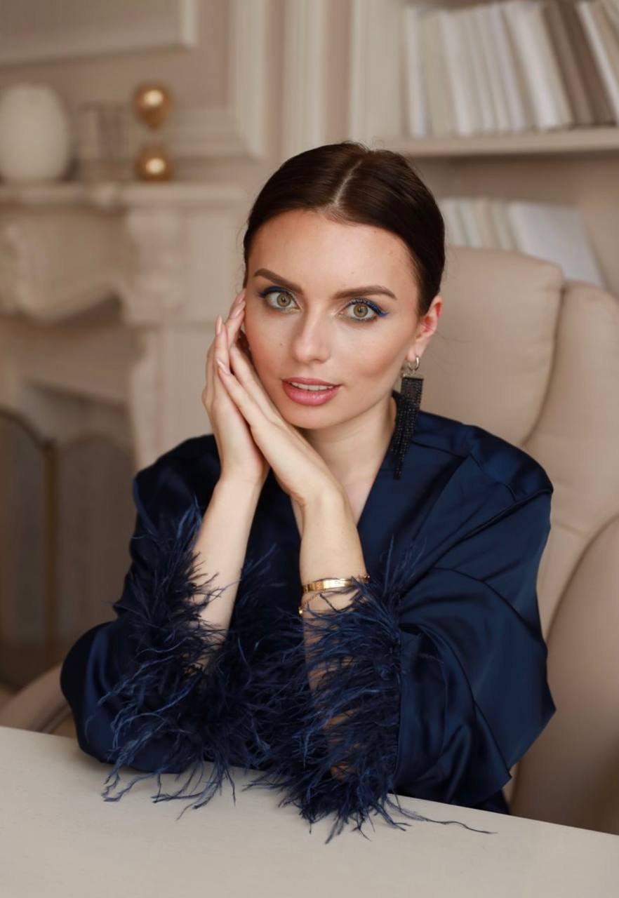

Психотерапия нового времени — на фундаменте нейробиологии. Работаю с травмой, кризисами и сложными жизненными сценариями краткосрочными методами.

Суть психотерапии — реорганизация нейронных сетей и стабилизация работы мозга.
Я работаю в интегративном подходе с опорой на краткосрочные методы: EMDR/ДПДГ, классический и когнитивный гипноз, провокативную терапию. Это не «просто поговорить» — это работа с тем, как мозг и нервная система кодируют опыт, и как этот код можно переписать.
Там, где разговорная терапия годами возвращает к боли, нейропроцессинг помогает интегрировать тяжёлый опыт в новый, устойчивый паттерн. Со сложными и клиническими случаями работаю в партнёрстве с психиатром и неврологом.
Краткосрочные методы с опорой на нейробиологию — для устойчивого результата вместо бесконечного процесса.
Переработка травмы на нейрофизиологическом уровне — нейропроцессинг. Часто 1–2 сессии на эпизод.
Травма · нейропроцессингРабота с убеждениями и состояниями через управляемые трансы и рост нейропластичности.
Трансы · убежденияБыстрый, ориентированный на результат формат вместо бесконечного процесса.
КраткосрочноПТСР и КПТСР, последствия насилия, утраты, тревожно-депрессивный фон, психосоматика.
Кризис · ПТСРПодбор инструментов под задачу клиента: элементы психоанализа, гештальта и КПТ.
Под задачуСтратегии развития на стыке терапии, нейробиологии и коучинга — личные и бизнес-задачи.
Бизнес · коучингСобственная методология работы со сложным жизненным сценарием и многоуровневой травмой — на основе EMDR и нейробиологии. Готовлю исследование механизмов ускорения реорганизации нейронных сетей.
Автор статей в СМИ, приглашённый гость теле-программ, спикер профильных конференций и мероприятий.
Среди клиентов — предприниматели, топ-менеджеры и блогеры-миллионники; работа на годы и по рекомендации.
Волонтёр и соучастник создания фонда — поддержка женщин в сложной жизненной ситуации и детей, оставшихся без попечения родителей.
Многоуровневая травма, последствия насилия, психосоматика, тревога и депрессивный фон, ПТСР/КПТСР.
Сопровождение на стыке терапии, нейробиологии и коучинга — личные и бизнес-задачи.
Публичность и высокие нагрузки, запрос на устойчивость и опору.
Личная терапия, супервизия и развитие практики для коллег.
Форматы для тех, кто приходит за помощью, и для специалистов, которые растут в профессии.
Личная работа онлайн и офлайн — глубокая проработка запроса краткосрочными методами.
Онлайн по темам: тревога и стресс, деньги, отношения, здоровье. Работа с одним убеждением или состоянием.
Книга «Нейропроцессинг. Психотерапия нового времени», нейро-приложение и EMDR-сессии в записи.
Telegram-сообщество с регулярным тематическим контентом, практиками и поддержкой.
Флагманская программа: авторская методология и нейробиологическая база для практиков.
Базовые и продвинутые техники нейропроцессинга и билатеральной стимуляции.
Разбор клинических случаев, личная терапия и сопровождение практики — индивидуально и в группе.
Развитие практики специалистов, обученных по методу, под единым брендом.
Запись на консультации и в программы — по рекомендации и через личные сообщения. Напишите мне в Telegram или Instagram.